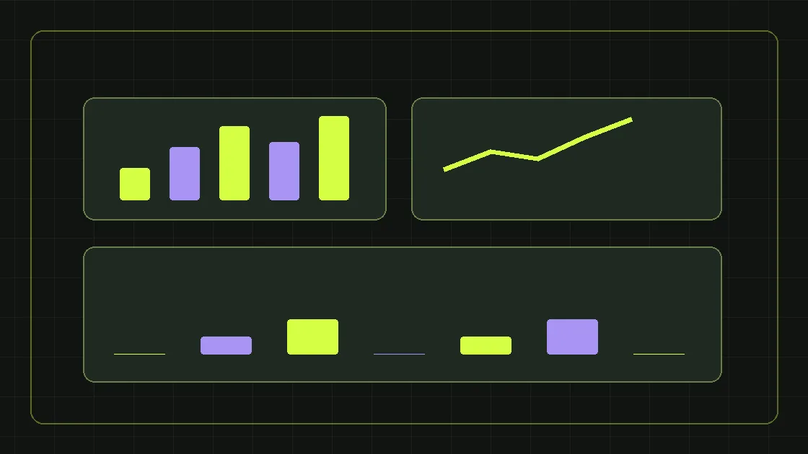

Структура отчёта, которая показывает не только клики, но и вклад маркетинга в продажи.
Зачем нужен отчёт
Хороший маркетинговый отчёт отвечает на три вопроса: что сделали, что изменилось и что будем делать дальше. Он не должен быть десятками скриншотов кабинетов без выводов. В начале покажите цели бизнеса и список согласованных KPI.
Минимальная таблица
Для каждого канала фиксируйте расход, показы, клики, обращения, квалифицированные лиды, стоимость лида и сумму подтверждённых продаж, если данные доступны. Разделяйте факт, план и прошлый период. Если продажи не передаются в аналитику, так и пишите, не заменяя их прогнозами.
Сделайте отдельную колонку качества
Одно обращение из дорогого канала может быть выгоднее десяти нецелевых. Поэтому важна обратная связь отдела продаж: квалификация, причины отказа, средний чек и длина цикла.
Объясняйте отклонения
Если CPL вырос, укажите гипотезы: сезонность, конкуренция в аукционе, снижение конверсии сайта или изменение целевого сегмента. Отделяйте наблюдения от доказанных причин. Для каждой проблемы назначайте действие, срок и ответственного.
Как использовать отчёт в управлении
Обсуждайте не только цифры, но и решения: какой канал масштабировать, какие гипотезы закрыть, какие данные улучшить. Так отчёт становится инструментом управления маркетингом, а не отчётностью ради отчётности.
Скачать шаблон маркетингового отчёта
Открыть и скачать готовый HTML-шаблон ежемесячного отчёта. Его можно распечатать или сохранить в PDF, а показатели заполнить на основе собственных данных компании.
С чего начинается полезный отчёт
Хороший отчёт начинается не со статистики рекламных кабинетов, а с целей бизнеса за конкретный период. Сформулируйте, какое решение нужно принять собственнику: увеличить бюджет, исправить конверсию сайта, повысить качество заявок, изменить приоритет продукта или уточнить работу отдела продаж. Затем укажите период сравнения и источники данных. Например, «октябрь относительно сентября» — это понятная рамка, но для сезонного бизнеса полезно дополнительно посмотреть тот же период прошлого года. На первой странице достаточно нескольких ключевых показателей и одного управленческого вывода. Детальную статистику можно разместить ниже. Главная ошибка — перечислить десятки метрик и не объяснить, что они означают для компании. В идеале читатель за минуту понимает, где результат, где отклонение и кто отвечает за следующий шаг.
Пять уровней воронки, которые нельзя смешивать
Разделите путь клиента на показы, переходы, обращения, квалификацию и продажи. Показы свидетельствуют об охвате рекламы, но не доказывают интереса; клики отражают взаимодействие, но не гарантируют заявку. В заявках могут оказаться дубли, спам и нецелевые обращения. Квалифицированный лид — это человек или компания, которые удовлетворяют заранее определённым условиям, например профилю клиента и наличию потребности. Продажа наступает позже и может зависеть от наличия товара, цены и работы менеджера. Для B2B между заявкой и сделкой часто нужны дополнительные этапы: контакт установлен, встреча, техническое задание, коммерческое предложение, согласование договора. Отчёт должен показывать эти переходы отдельно. Иначе можно отчитаться ростом заявок, когда отдел продаж фактически получает больше лишней работы.
Словарь метрик с формулами
CTR — клики, делённые на показы, умноженные на 100%; показатель помогает оценить привлекательность объявления, но не отражает качество продажи. CPC — расходы на рекламу, делённые на клики. Конверсия страницы в заявку — количество подходящих по учёту заявок, делённое на визиты или другую выбранную основу; используйте одинаковый знаменатель каждый месяц. CPL — расходы канала, делённые на число лидов. CPQL — расходы, делённые на квалифицированные лиды. Доля квалификации — квалифицированные лиды, делённые на все обработанные обращения. CAC — затраты на привлечение клиентов, делённые на число приобретённых клиентов по согласованной методике. ROMI и ROAS требуют заранее выбранных определений дохода и затрат; нельзя подменять маржинальную прибыль оборотом. В методологии запишите, что именно считается в числителе и знаменателе.
Данные: какой сервис отвечает за какой показатель
Расходы и показы лучше брать из рекламных систем, события на сайте — из аналитики, фактические заявки и качество обработки — из CRM, закрытые оплаты — из финансового учёта. Эти источники могут считать события по-разному. Например, реклама фиксирует конверсии по своей модели атрибуции, а CRM хранит один итоговый контакт с несколькими обращениями. Не пытайтесь автоматически складывать все числа из систем в единый показатель без правил дедупликации. Создайте словарь полей: ID лида, дата создания, источник, кампания, статус квалификации, дата коммерческого предложения, дата сделки, выручка. Определите ответственного за достоверность каждого поля. Если данные отсутствуют, так и напишите в отчёте — это честнее, чем заменять их оценками без пометки.
Таблица для руководителя
Минимальная управленческая таблица включает столбцы «Канал», «Расход», «Обращения», «Квалифицированные обращения», «CPQL», «Коммерческие предложения», «Сделки», «Выручка», «Комментарий». Для каждого канала показывайте план, факт и изменение к прошлому периоду. Если у компании длинный цикл сделки, добавьте столбец с долей сделок, созревших из обращений предыдущих месяцев. Для отделов продаж полезны причины дисквалификации: неподходящий регион, некорректный запрос, бюджет, отсутствие потребности, недоступный номер. Дополнительная строка — «Неизвестный источник»: такая категория показывает качество аналитики. Не скрывайте её и не распределяйте заявки случайно по каналам. Раздельный учёт неизвестного источника позволит оценить реальную полноту маркетинговых данных.
Как читать отклонения, а не искать виноватого
Если вырос CPL, сначала определите, что именно изменилось: стоимость перехода, конверсия сайта или определение лида. Если при прежнем CPL снизилась доля квалификации, проверьте новые аудитории, сообщения в объявлениях и скорость ответа менеджеров. Если квалификация осталась прежней, но упали сделки, проблема может быть в коммерческом предложении, наличии товара или сроках. Одной корреляции недостаточно, чтобы объявить причину доказанной. В отчёте разделяйте факт, гипотезу и действие. Например: «Доля квалификации снизилась; возможная причина — расширение аудитории; проверим сегменты и записи разговоров до следующего отчёта». Такой формат превращает цифры в план проверки, а не в набор обвинений между отделами.
Еженедельный и ежемесячный отчёты решают разные задачи
Еженедельный отчёт должен помогать быстро управлять каналами: обнаружить остановившуюся форму, неожиданный рост расходов, ошибки передачи UTM, снижение скорости ответа. Он может быть кратким, с несколькими приоритетами и ответственными. Ежемесячный отчёт оценивает более устойчивую динамику: изменения структуры трафика, CPQL, накопленные результаты тестов, вклад в воронку, состояние поискового продвижения. Квартальный обзор нужен для стратегических решений: продолжать ли вложения в канал, расширять ли команду, менять ли продуктовые предложения. Не пытайтесь одной таблицей одинаково подробно обслуживать все уровни. Разным читателям нужна разная степень детализации, но единая методология расчёта.
Почему важны когорты и длительность сделки
В B2B лид может появиться в январе, коммерческое предложение — в феврале, а договор — в апреле. Если сравнивать расходы января только с продажами января, канал будет выглядеть хуже, чем он есть. Поэтому полезно группировать заявки по месяцу первого обращения и смотреть, сколько из них дошло до следующих этапов через 30, 60 и 90 дней. Это когортный анализ. Он не отменяет месячную кассовую выручку, а отвечает на другой вопрос: какие источники привели будущих клиентов. При таком подходе можно увидеть, что канал с небольшим числом обращений формирует дорогие сделки, а массовый канал — почти не даёт квалифицированного интереса. Для корректного сравнения нужны стабильные правила связывания контакта со сделкой.
Как фиксировать результаты экспериментов
Каждая гипотеза должна иметь дату запуска, целевую аудиторию, изменение, ожидаемый эффект и критерий решения. Например: «Новый первый экран посадочной должен увеличить долю качественных заявок по конкретному продукту». При проверке нельзя ограничиваться количеством нажатий на кнопку; нужны реальная отправка формы и квалификация. В отчёте показывайте, какие элементы менялись одновременно. Если вместе изменили посадочную, бюджет и аудиторию, сложно приписать результат одному фактору. Не объявляйте победителя на основании пары случайных обращений. При недостатке данных записывайте промежуточный статус «тест продолжается». Это сохраняет управляемость и не провоцирует постоянную смену гипотез по настроению.
Как разговаривать с отделом продаж на основе отчёта
Маркетинг и продажи должны использовать общий справочник статусов. Если маркетолог считает лидом заполненную форму, а менеджер — только состоявшийся разговор, их отчёты никогда не совпадут. Согласуйте момент появления лида, критерии квалификации, причины отказа и срок первого контакта. Уточните, кто отвечает за дубли, пропущенные звонки и повторные обращения. Раз в неделю просматривайте выборку качественных и некачественных заявок вместе с менеджерами. Не нужно разбирать персональные данные на общем экране без необходимости; достаточно обезличенной статистики и контролируемого доступа к карточкам. Цель совместного разбора — улучшить предложение и процесс, а не доказать преимущество одной команды над другой.
Иллюстративный пример управленческого вывода
Допустим, что реклама дала больше обращений, чем месяц назад, но число квалифицированных лидов почти не выросло. В таком случае вывод «канал вырос на 30%» будет вводить в заблуждение, если он относится только к количеству форм. Более полезное решение — проверить источники роста, сегменты с низкой квалификацией и формулировки объявлений. Затем запустить одну гипотезу по качеству и сравнить CPQL через согласованный период. Это условная ситуация, а не данные клиента Expert Team. Хороший маркетинговый отчёт показывает не только победы, но и то, какие расходы удалось признать неэффективными, почему принято решение остановить тест и какие данные пока не позволяют сделать вывод.
Что проверить перед отправкой отчёта
Проверьте корректность периода, единицы измерения, валюту, рекламные расходы с учётом выбранного правила, числа заявок по CRM, дедупликацию, статусы качества и совпадение итогов с таблицами. Убедитесь, что нет неподтверждённых формулировок вроде «мы заработали клиенту», если фактически известна только сумма созданных заявок. Уточните, не попали ли расходы нескольких направлений в один канал. Попросите коллегу проверить арифметику и прочитать вывод без доступа к рекламным кабинетам: если смысл непонятен, добавьте пояснения. Финальный отчёт должен заканчиваться списком решений, сроками и ответственными, а не только выводом «продолжаем работать».
Как использовать шаблон Expert Team
Скачайте HTML-шаблон маркетингового отчёта, заполните фактические значения и оставьте прочерки там, где данных нет. Сначала согласуйте единые определения CPL и CPQL, затем подключайте автоматические выгрузки. Не нужно превращать отчёт в сложную BI-систему до того, как команда научится поддерживать исходные данные. Для построения общей системы показателей полезен маркетинг на аутсорсе, а для контроля нескольких каналов и планирования бюджета — маркетинг под ключ. Точный шаблон важен меньше, чем дисциплина его заполнения и способность руководителя принимать решения.
Этот материал находится на согласовании и не индексируется поисковиками, пока редактор не подтвердит факты и источники.
Сделаем план под вашу ситуацию
Обсудим задачи бизнеса и бюджет первых тестов.
Получить маркетинговый план ↗